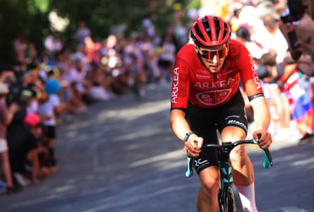
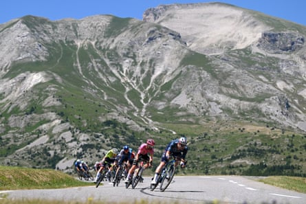
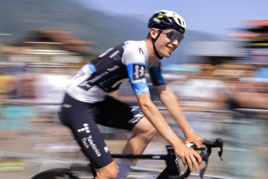
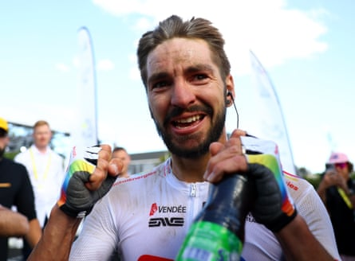

Alpecin-Deceuninck
Two men, Mathieu van der Poel and Jasper Philipsen, with one plan: stage wins and the green jersey; VDP is the big star, but in recent Tours de France it’s been “Jasper Disaster” who has delivered. On the flat stages, VDP uses his explosive power and superlative bike handling to lead out Philipsen, who has won nine stages in the last three Tours and the green jersey in 2023. Anywhere a bit lumpy will be for VDP, although he has taken only one Tour stage in his career. That was at Mûr de Bretagne in 2021, so watch out for him when the Tour returns there on 11 July.
Team: Van der Poel, Philipsen, Kaden Groves, Silvan Dillier, Xandro Meurisse, Jonas Rickaert, Gianni Vermeersch, Emiel Verstrynge.
Main man: Mathieu van der Poel. Philipsen wins more, VDP wins bigger: Milan-San Remo and Paris-Roubaix already this year. More than worth the price of his golden Lamborghini.
Arkéa-B&B Hotels
Both sponsors leave at the year’s end, without replacements in sight: the writing is on the wall for the homespun Bretons. Kévin Vauquelin is their strongman, but Arnaud Démare is getting back to his best and, although he’s now 33, with eight stage wins in the Giro d’Italia and two in the Tour de France he shouldn’t be written off.
Team: Vauquelin, Démare, Cristián Rodríguez, Raúl García Pierna, Ewen Costiou, Mathis Le Berre, Amaury Capiot, Clément Venturini.
Main man: Kévin Vauquelin, winner of stage two in 2024 . The punchy 24-year-old Norman was within a whisker of landing the Tour de Suisse 10 days ago.
Kévin Vauquelin attacks during stage two of the 2024 Tour de France.Photograph: Getty Images
Bahrain Victorious
Among the umpteen teams going for a stage win, with probably the most potential: the pocket climber Lenny Martinez won a stage at the Dauphiné, the don of the downhills Matej Mohoric has won three Tour stages and Milan-San Remo, while Phil Bauhaus can sprint a bit, Santiago Buitrago can climb with the best, and the former British champion Fred Wright has landed second places in stages at the Vuelta and Tour. If they can work out who’s leading on any given day, good things will happen.
Team: Martinez, Buitrago, Mohoric, Bauhaus, Wright, Kamil Gradek, Jack Haig, Robert Stannard.
Main man: Lenny Martinez. His grand-père, Mariano, was King of the Mountains in 1978, his father, Miguel, won an Olympic gold. No pressure then.
Cofidis
After 27 years in the pro peloton, Cofidis are deep in the relegation mire. Simon Carr and Ion Izagirre can climb, Alex Aranburu can handle the hilly days, Benjamin Thomas and Bryan Coquard are fast finishers, but Dylan Teuns hasn’t won big since Flèche Wallonne in 2022. This all has a nearly-but-not-quite feel about it.
Team: Emmanuel Buchman, Aranburu, Izagirre, Thomas, Carr, Coquard, Teuns, Alexis Renard, Damien Touzet.
Main man: Emmanuel Buchman’s fourth in the 2019 Tour is long past, reflecting Cofidis’s perennial ability to sign riders past their sell by date.
Decathlon-Ag2R La Mondiale
Gone are the brown shorts, gone is the founder, Vincent Lavenu, a raft of French riders leave at the year’s end, and ownership has switched to Decathlon. The immediate target is a stage for Felix Gall, but the future hangs on the 18-year-old Paul Seixas, the “next Bernard Hinault”, who sits this one out.
Team: Gall, Oliver Naesen, Stefan Bissegger, Clément Berthet, Aurélien Paret-Peintre, Callum Scotson, Bastien Tronchon.
Main man: Felix Gall. The Austrian won a major mountain stage in 2023 but has not kicked on and, given the churn at Decathlon, time is running out.
EF Education-Easypost
It’s all about stage wins for the American team, who lost the Giro this year in the Mexican standoff between their Richard Carapaz – ruled out of the Tour by a gastro-intestinal infection – and Isaac del Toro. Neilson Powless pulled off an improbable Dwars door Vlaanderen win in April, Harry Sweeney was flying in the Tour of Switzerland and you can bet that Ben Healy will target every hilly stage; he has yet to win at the Tour but it’s only a matter of time.
Team: Healy, Sweeney, Powless, Vincenzo Albanese, Michael Valgren, Alex Baudin, Kasper Asgreen and Marijn van den Berg.
Main man: Ben Healy. Aggressive Irishman who started out on the Halesowen track in Birmingham and is now a consummate stage hunter.
Ben Healy (in the pink jersey and hat) rides through the mountains on stage 18 of last year’s Tour.Photograph: Dario Belingheri/Getty Images
Groupama-FDJ
Since Thibaut Pinot retired, FDJ have lost their way. Time to find it again with this group: the British rider Lewis Askey has won twice already this year, Paul Penhoët is a promising young sprinter, while Romain Grégoire took a stage in the Tour of Switzerland and Valentin Madouas has an Olympic silver medal to his name.
Team: Guillaume Martin, Madouas, Grégoire, Askey, Penhoët, Quentin Pacher, Cyril Barthe, Clément Russo.
Main man: Guillaume Martin. The amiable Norman author consistently places between 10th and 15th at the Tour, which is every bit as exciting as it sounds.
Ineos Grenadiers
Jim Ratcliffe’s Grenadiers are far removed from the Team Sky glory days, without a Grand Tour overall win in four years. Here they are among the mid-table stage hunters, with an obvious target a win for the hulking Italian Filippo Ganna in the early time trial plus a spell in yellow, while Carlos Rodríguez targets the top five. It’s Geraint Thomas’s last Tour but the Welshman’s form is in doubt after a recent crash.
Team: Thymen Arensman, Tobias Foss, Filippo Ganna, Axel Laurance, Carlos Rodriguez, Connor Swift, Geraint Thomas, Samuel Watson.
Main man: Carlos Rodríguez. Now 24, the Spaniard is a consistent racer yet to improve on his fifth overall in the 2023 Tour.
Intermarché-Wanty
Relegation looms large for the Wallonian squad because they rely on the sprinter Biniam Girmay and he hasn’t been on his form of last year. He needs to repeat 2024’s sweep of three stage wins plus points jersey because the rest of the team looks thin, Sunday’s German title for Georg “Gigi” Zimmerman notwithstanding.
Team: Girmay, Hugo Page, Laurenz Rex, Zimmermann, Louis Barré, Vito Braet, Roel van Sintmaartensdijk, Jonas Rutsch.
Main man: Biniam Girmay, the Eritrean sprinter who blazed a trail for cyclists of colour when he took the Gent-Wevelgem Classic in 2022, but has yet to win in 2025.
Israel-Premier Tech
Plenty of potential, but what to target, given the recent health problems of their leader, Michael Woods? Joe Blackmore is a massive raw talent , Jake Stewart has a new lease of life evidenced by his Dauphiné stage win, and if Woods is fit he’ll climb with the best. Between them, they can deliver a stage win.
Team: Blackmore, Woods, Stewart, Alexey Lutsenko, Pascal Ackermann, Guillaume Boivin, Matis Louvel, Krists Neilands.
Main man: Joe Blackmore. IPT won’t have a fixed leader, but last year’s Tour de l’Avenir winner’s progress will be a pointer to the future.
Jayco-Al ula
Even without the sprinter Mike Matthews, the Australian team have three obvious focal points: Ben O’Connor for the overall standings and a mountain stage; the Irishman Eddie Dunbar for the hilly days; and the Dutch fast man Dylan Groenewegen, led out by Luca Mezgec, to add to his six career Tour sprint stages.
Team: O’Connor, Dunbar, Groenewegen, Mezgec, Mauro Schmid, Elmar Reinders, Luke Durbridge, Luke Plapp.
Main man: Ben O’Connor. The Australian climber broke through at the 2021 Tour and landed second in last year’s Vuelta a España and UCI world championship.
Lidl-Trek
After a prolific spring, July is all about stage wins, with Jonathan Milan for the flat finishes and the precocious Belgian Thibau Nys for anything tougher. On the hilly days look out for Edward Theuns and Mattias Skjelmose, who snaffled the Amstel Gold Classic from under the nose of Tadej Pogacar in April. The stage hunter Quinn Simmons has the peloton’s most dramatic facial hair, and on current form has a good chance of Making America Great Again in France.
Team: Milan, Skjelmose, Theuns, Nys, Simmons, Jasper Stuyven, Simone Consonni, Toms Skujins.
Main man: Jonathan Milan. Italian sprinter with four stages in the Giro to his name who shines when the roads are the lumpy side of flat.
Lotto-Caps
It’s all about one man for the second division Belgians: Arnaud De Lie had a fantastic 2024 and managed five top-five stage finishes in his first Tour last year. But he’s had a nightmare this season, with poor form and morale, although he looked more bullish recently in the Tour of Switzerland.
Team: De Lie, Lennert Van Eetvelt, Jasper De Buyst, Jenno Berckmoes, Jarrad Drizners, Brent Van Moer, Alec Segaert, Eduardo Sepúlveda.
Main man: Arnaud De Lie. The “Walloon bull” has 24 pro wins to his name and he’s still only 23; a first Tour stage is the obvious goal.
Movistar
The oldest team in the bunch would look a bit stodgy without Iván Romeo, who is in his first pro season and the hottest prospect in Spanish cycling. He won a stage at the Critérium du Dauphiné and just landed the Spanish national title, so expectations will be sky high in the next three weeks.
Team: Romeo, Enric Mas, Pablo Castrillo, Nelson Oliveira, Einer Rubio, Gregor Mühlberger, Will Barta, Iván García Cortina.
Main man: Iván Romeo. He’s all of 21, so it’s time to test the old adage that if you’re good enough, you’re old enough.
The youthful Iván Romeo can make waves with Movistar.Photograph: Stefano Cavasino/IPA Sport/ipa-agency.net/Shutterstock
Picnic-PostNL
The relegation-threatened Dutch squad are without the sprinter Fabio Jakobsen or the recently retired Romain Bardet. Oscar Onley’s stage win and third overall at the Tour of Switzerland have soothed the nerves; he should improve on his fifth place on a stage last year, while there is a first Tour start for his fellow Scot Sean Flynn.
Team: Onley, Flynn, Frank Vandenbroucke, Tobias Lund Andresen, Niklas Märkl, Warren Barguil, Pavel Bittner, Tim Naberman.
Main man: Oscar Onley. The 22-year-old former runner from Kelso has progressed rapidly and unobtrusively since turning pro in 2023.
Red Bull-Bora-Hansgrohe
The big bucks from Red Bull are transforming a formerly stolid German team. They landed the Vuelta last year with Primoz Roglic but the Slovene is more than usually accident prone – he quit the Tour last year and the Giro this year after heavy crashes – so fingers will be crossed every time there’s a pile-up of any dimension. If Roglic can stay upright, the podium is a fair target, as he is a doughty all-rounder when he’s in one piece, and his mountain support men, Florian Lipowitz and Aleksandr Vlasov, were bubbling under nicely in the buildup to the Tour.
Team: Roglic, Vlasov, Lipowitz, Danny van Poppel, Laurence Pithie, Mick van Dijke, Gianni Moscon, Jordi Meeus.
Main man: Primoz Roglic. The Slovene has five Grand Tour wins and two weaknesses – his age and his capacity for falling off when he really shouldn’t.
Soudal-Quick-Step
In early June, the Belgian squad nudged past 1,000 wins since their foundation; they will add to that in the next few weeks, targeting sprint stages with the European champion, Tim Merlier, and the overall classification with the double Olympic champion, Remco Evenepoel, who will have the stage five time trial in his sights after winning the Critérium du Dauphiné contre la montre ahead of Tadej Pogacar. Win that and the foundations are there for a repeat of last year’s third place overall. One question: do they target green with Merlier or yellow with Evenepoel? It’s the kind of dilemma most managers would give their eye teeth for.
Team: Evenepoel, Merlier, Bert Van Lerberghe, Mattia Cattaneo, Ilan Van Wilder, Pascal Eenkhoorn, Valentin Paret-Peintre, Maximilian Schachmann.
Main man: Remco Evenepoel. The Belgian prodigy is the best time-triallist in the race but he needs to gain a few per cent in the mountains to stay with Tadej Pogacar and Jonas Vingegaard .
Total Energies
Perennial underdog French squad who hit the jackpot last year with a stage win for Anthony Turgis ; they will be a daily presence in doomed escapes to garner television time. Their main sponsor will also appear on the Ineos Grenadiers jersey, but rumours of a merger are reportedly unfounded.
Team: Turgis, Mathieu Burgaudeau, Steff Cras, Alexandre Delettre, Thomas Gachignard, Emilien Jeannière, Jordan Jegat, Mattéo Vercher.
Main man: Anthony Turgis. At 31 “Toto” is the ur-French cyclist: attacking constantly, winning once in a blue moon. Another stage win would be career-defining.
Anthony Turgis reacts after his epic win on stage nine of the 2024 Tour.Photograph: Getty Images
Tudor Pro Cycling
Founded by Fabian Cancellara, this Swiss division two squad looks promising for their first Tour. Michael Storer is the climber, Alberto Dainese the sprinter, Marc Hirschi the man for the lumpy stages, while Julian Alaphilippe just has to be his sparkling self. You wouldn’t bet against a stage win for this group.
Team: Alaphilippe, Dainese, Hirschi, Storer, Marco Haller, Matteo Trentin, Fabian Lienhard, Marius Mayrhofer.
Main man: Julian Alaphilippe. His years of plenty are over but the double world champion needs only a hint of success to get the home press purring.
UAE Team Emirates
You can argue the relative merits of Tadej Pogacar’s UAE posse or Jonas Vingegaard’s Visma all you will, but it’s academic. If Pogacar is on song, UAE are the strongest, without a weak link in their Tour team, perfectly drilled and improving each year as their leader matures. It’s when things go wrong for the Slovene, or he’s absent, that it gets interesting. At the Giro a few weeks ago, UAE were shapeless and unable to win the race for their Mexican Isaac del Toro; at the 2022 and 2023 Tours, they were unable to control Visma. João Almeida, the Tour of Switzerland winner, is a possible plan B.
Team: Pogacar, Almeida, Adam Yates, Pavel Sivakov, Marc Soler, Tim Wellens, Jhonatan Narváez, Nils Politt.
Main man: Tadej Pogacar. En route to a record to match Eddy Merckx, “Pogi” is the perfect all-rounder. But even big Ted had off days; that’s all his rivals can hope for.
Uno-X Mobility
Now in their third Tour, the Norwegians are canny operators, targeting what they can when the big men aren’t playing. For example, they put Jonas Abrahamsen in the mountains jersey for 12 stages last year. No place for the veteran Alexander Kristoff but every chance of a stage win from this talented, aggressive squad.
Team: Abrahamsen, Magnus Cort, Søren Waerenskjold, Andreas Leknessund, Tobias Halland Johannessen, Anders Halland Johannessen, Markus Hoelgaard, Stian Fredheim.
Main man: With nine stage wins across the Grand Tours, the mustachioed Magnus Cort is a threat every time he gets in a break.
Visma-Lease a Bike
Alongside UAE Emirates, Visma is the race’s other mighty Armada – winners of all three Grand Tours in 2023. They field the most valuable teammate in cycling, Wout van Aert, alongside the recent Giro champion, Simon Yates , plus the 2023 Vuelta winner, Sepp Kuss : either of these or even the US’s Matteo Jorgenson can take on the role of leader if Jonas Vingegaard crumbles or falls. A well-drilled team was key when Yates snatched this year’s Giro, and helped Vingegaard break Pogacar in 2022 and 2023; Visma need to be perfect to crack the Slovene and his team this year.
Team: Vingegaard, Van Aert, Jorgenson, Kuss, Simon Yates, Victor Campenaerts, Tiesj Benoot, Edoardo Affini.
Main man: Jonas Vingegaard. The Danish double Tour winner is the only rider who can match Pogacar, but he was slightly off the pace at the recent Critérium du Dauphiné.
XDS Astana
A monstrously strong spring has lifted Kazakhstan’s finest out of the World Tour relegation zone – 21 wins for 10 different riders is spectacular – but this lineup, without any of their big winners from earlier this season, suggests that they threw everything at the Giro d’Italia, a more fertile source of ranking points. They will get in the breaks on the hilly and mountain days, but other teams will be better organised and more desperate.
Team: Harold Tejada, Sergio Higuita, Simone Velasco, Clément Champoussin, Mike Teunissen, Evgeny Fedorov, Davide Ballerini, Cees Bol.
Main man: No clear leader. Evgeny Fedorov has won twice recently, but the Kazakh road and time trial titles aren’t the best pointer to Tour form.